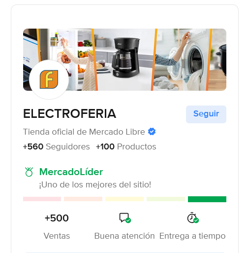
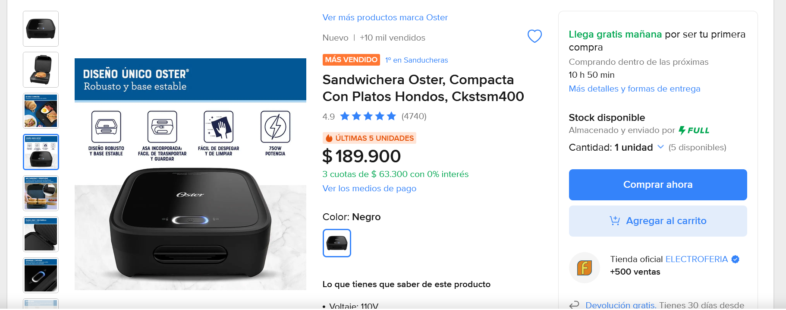
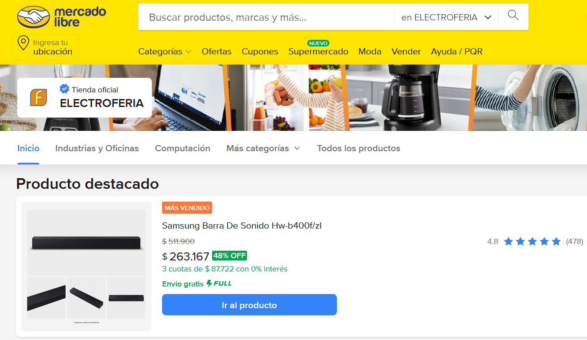

Experiencia en la creación y montaje de catálogos de productos, configuración de publicaciones y optimización de perfiles comerciales.
Responsable de la administración de ventas en línea, incluyendo estrategias de posicionamiento de marca, campañas de marketing digital y análisis de métricas para mejorar la visibilidad y conversión.
Coordinación de procesos logísticos: control de inventarios, gestión de envíos, seguimiento de pedidos y atención al cliente para garantizar una experiencia de compra satisfactoria.
Implementación de técnicas de SEO y SEM aplicadas a descripciones y títulos de productos, logrando mayor alcance y competitividad en el marketplace.
Resultados: incremento en las ventas, fortalecimiento de la reputación de la tienda y consolidación de la presencia digital de la marca.
Creación y montaje de catálogos de productos en la plataforma.
Configuración de publicaciones optimizadas con títulos, descripciones y fotografías atractivas.
Implementación de estrategias de marketing digital y posicionamiento de marca.
Administración de ventas en línea y seguimiento de métricas de rendimiento.
Coordinación de procesos logísticos: inventarios, envíos y atención al cliente.
Aplicación de técnicas de SEO y SEM para aumentar visibilidad y competitividad.
Resultados: incremento en ventas, mejora en la reputación de la tienda y consolidación de la presencia digital.

Cración Plataforma en Mercado Libre

Configuración de Productos

Creación de Mi Página en Mercado Libre